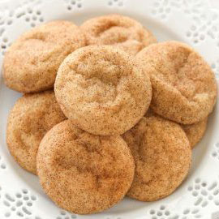

Snickerdoodle Recipe
Ready In: 25 minutes
Serves: 24
Why Snickerdoodles?
I'll be pretty honest, I've never made these before and only have eaten them once. BUT I'm planning on making these therefore, I chose this recipe as a reference to my future regrets of devouring all the cookies.
Ingredients
Directions
- Preheat oven to 350°F.
- Mix softened butter, 1 ½ cups sugar, 1 tsp of vanilla extract and eggs thoroughly in a large bowl.
- Combine flour, cream of tartar, baking soda and salt in a seperate bowl.
- Blend dry ingredients into butter mixture.
- Chill dough ,and chill an ungreased cookie sheet for about 10-15 minutes in the fridge.
- Meanwhile, mix 3 tablespoon of sugar, and 3 tablespoons of cinnamon in a small bowl.
- Scoop onr inch globs of dough into the sugar/cinnamon mixture.
- Coat by gently rolling balls of dough in the sugar mixture.
- Place on chilled ugreased cookie sheet, and bake for 10 minutes.
- Remove from pan immediately.